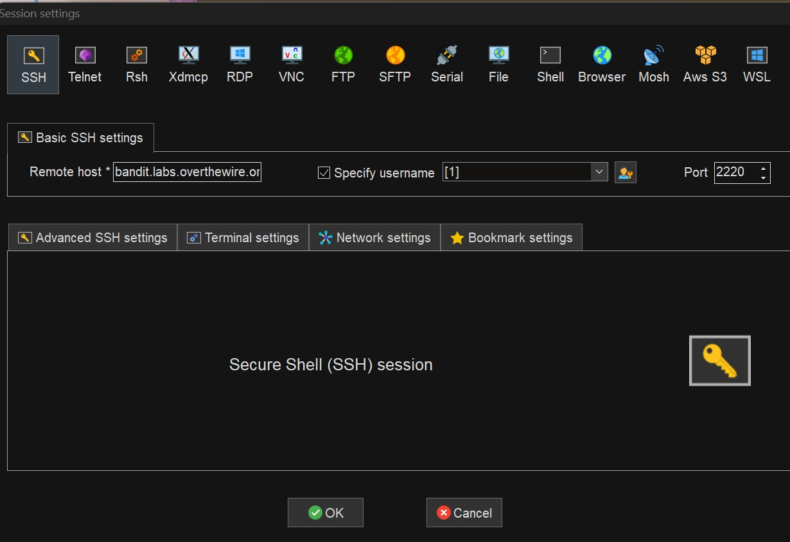
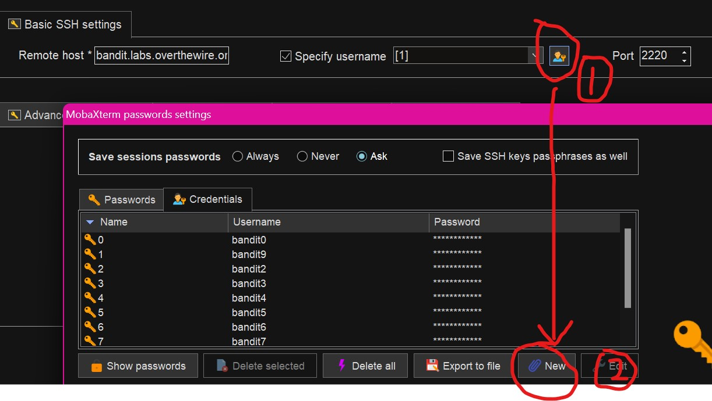
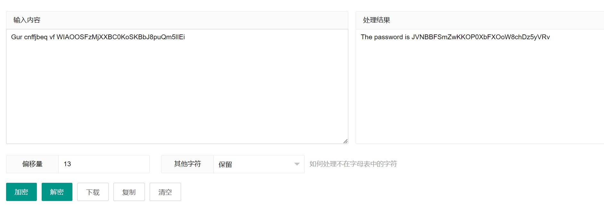

OverTheWire-bandit解析
友情提示
理论来说 这个网页的网站说了不允许剧透或是writeup
但这大多是为了方便我自身复习留下的资料
因此我不会直接在文中提供flag 只会写出方法与代码
环境介绍
网页链接
该网页类似一个在线靶场 需要你登录它所提供的账号密码登录其ssh服务进行一场小游戏
我使用了MobaXterm来登陆/输入指令
具体过程
level 0/准备
The goal of this level is for you to log into the game using SSH. The host to which you need to connect is bandit.labs.overthewire.org, on port 2220. The username is bandit0 and the password is bandit0. Once logged in, go to the Level 1 page to find out how to beat Level 1.
页面描述为指示你链接ssh服务 并给予了对应ip 端口 账号 密码
一旦登录成功 便可进入level0→level1的页面
关于登录 我们先打开MobaXterm 点击左上角的 Session 选择ssh
输入ip地址bandit.labs.overthewire.org与端口2220

确认后左边的User sessions便会多出一个连接 右键 Edit session 会进入相同的页面

先点击① 会出来账号管理器 点击②来新建一个 输入bandit0与bandit0
保存好后在登陆前勾选左边的 Specify username 选择对应账号名即可快速登陆
注：使用MobaXterm的该功能必须设定一个高级密码 请不要忽视它跳出的窗口
每道题里的flag相当于下一题的账号密码
也就是说下道题的结论是 账号 bandit(题号) 与 密码 flag值
这些即为前提 接下来正式入手
level1/起始
Bandit Level 0 → Level 1
Level Goal
The password for the next level is stored in a file called readme located in the home directory. Use this password to log into bandit1 using SSH. Whenever you find a password for a level, use SSH (on port 2220) to log into that level and continue the game.
Commands you may need to solve this level
根据题目描述 在主目录下有名为readme的文件 查看该文件内容即可获取密码
既然是在主目录下 其实连ls都省了 直接 cat readme即可获取flag值
level2
Bandit Level 1 → Level 2
Level Goal
The password for the next level is stored in a file called - located in the home directory
Commands you may need to solve this level
此关的目的是读取一个名为-的文件
由于-的名称与root根目录相同 直接cat或者加引号都无法读取
因此需要转为绝对路径./-
输入cat ./-来获取flag值
level3
Bandit Level 2 → Level 3
Level Goal
The password for the next level is stored in a file called spaces in this filename located in the home directory
Commands you may need to solve this level
这关是考察通过cat获取文件名中有空格的文件内容
用引号来转义空格 使系统识别后部分为一个整体即可cat ‘spaces in this filename’
level 4
Bandit Level 3 → Level 4
Level Goal
The password for the next level is stored in a hidden file in the inhere directory.
Commands you may need to solve this level
题目描述有一个被隐藏的文件藏在了inhere目录中 叫我们尝试读取
那就使用ls的-a附加项来查看隐藏文件
使用cd来切换目录
1 | cd inhere //切换至inhere目录 |
level5
Bandit Level 4 → Level 5
Level Goal
The password for the next level is stored in the only human-readable file in the inhere directory. Tip: if your terminal is messed up, try the “reset” command.
Commands you may need to solve this level
inhere目录中唯一可读的文件才是我们追求的答案
我们查看下边提示中的命令列表 发现了file命令可用
经过搜索得知 Linux file命令用于辨识文件类型
注：文件名前加了- 无法正常读取 需要使用相对路径
1 | file ./\* //显示同个目录下的所有文件的文件类型 |
很明显 只有-file07为ASII text形式 只需读取即可
1 | cat ./-file07 |
level6
Bandit Level 5 → Level 6
Level Goal
The password for the next level is stored in a file somewhere under the inhere directory and has all of the following properties:
- human-readable
- 1033 bytes in size
- not executable
inhere目录中的指定文件存有flag 以下为flag文件的特征：
可读性 大小1033字节 无法运行
这里我们使用find命令的附加项即可
1 | find [路径] [匹配条件] [动作] |
进入inhere目录
1 | ls -al |
结果如下 我们使用find命令寻找目标文件
1 | find -size 1033c //在当前目录寻找大小为1033字节的文件 |
level7
Bandit Level 6 → Level 7
Level Goal
The password for the next level is stored somewhere on the server and has all of the following properties:
- owned by user bandit7
- owned by group bandit6
- 33 bytes in size
这次直接没有指定目录了
给的目标文件特征为：
文件所属者bandit7
文件所属组bandit6
大小33字节
刚刚也给了相关的附加项 这里直接进行搜索
1 | find / -user bandit7 -group bandit6 -size 33c |
level 8
Bandit Level 7 → Level 8
Level Goal
The password for the next level is stored in the file data.txt next to the word millionth
Commands you may need to solve this level
man, grep, sort, uniq, strings, base64, tr, tar, gzip, bzip2, xxd
密码在data.txt之中 字符串靠近millionth
我们这里使用uniq命令来寻找data.txt中没有重复的行列
1 | uniq data.txt|grep millionth |
密码直接就出来了
level 9
Bandit Level 8 → Level 9
Level Goal
The password for the next level is stored in the file data.txt and is the only line of text that occurs only once
Commands you may need to solve this level
grep, sort, uniq, strings, base64, tr, tar, gzip, bzip2, xxd
和上题相似 但要找的是只出现过一次的内容
需要使用与uniq相似的sort命令来一起助力
同时使用uniq的附加项-u来显示仅显示出一次的行列
1 | sort data.txt|uniq -u |
level 10
Bandit Level 9 → Level 10
Level Goal
The password for the next level is stored in the file data.txt in one of the few human-readable strings, preceded by several ‘=’ characters.
Commands you may need to solve this level
grep, sort, uniq, strings, base64, tr, tar, gzip, bzip2, xxd
这题要用到strings命令输出文件中可打印的字符 并筛选出与等号相接的
1 | strings data.txt|grep = |
level 11
Bandit Level 10 → Level 11
Level Goal
The password for the next level is stored in the file data.txt, which contains base64 encoded data
Commands you may need to solve this level
grep, sort, uniq, strings, base64, tr, tar, gzip, bzip2, xxd
data.txt中的密码经过base64加密 解密即可
1 | base64 -d data.txt |
level 12
Bandit Level 11 → Level 12
Level Goal
The password for the next level is stored in the file data.txt, where all lowercase (a-z) and uppercase (A-Z) letters have been rotated by 13 positions
Commands you may need to solve this level
grep, sort, uniq, strings, base64, tr, tar, gzip, bzip2, xxd
该密码经过凯撒密码(偏移量13)加密 放在网站里解密即可
